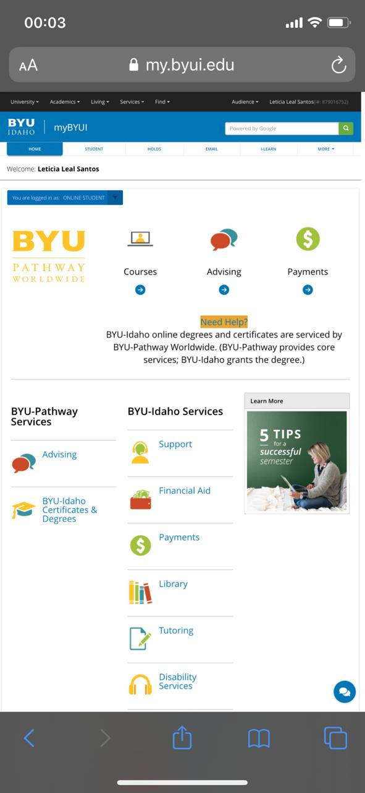

Proximity
Proximity is the placement of items, groups, or elements. The design of a website depends on the proximity of things to form a more organized look.On this mobile website of BYUI it shows a good representation of what the proximity is by the spacing of each item on the student area.
My BYUI
Repetition
This is the repetition of the same shape, color, or symbol. The repetition can help to guide the user to a specific location on the webpage if so desired. Facebook has a good example of repetition right at the beggining of the page in the status retangles.
Visual Hierarchy
This principle defines the priorities of the piece in order to convey the message to the user in a more simplified way, so that they know what t look first, second and so on, I believe the BYU Pathway Worldwide website is a good example of that from the banner to the end of the page.